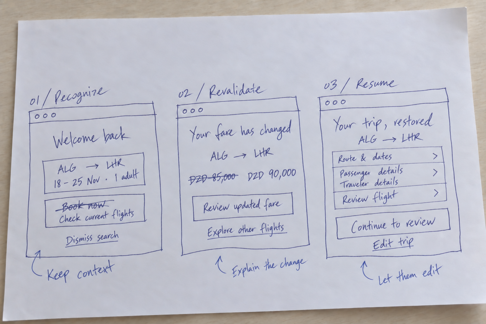

Left without booking.
A substantial share of searchers exited before completing a ticket purchase.
From an abandoned flight search to a confident next step.
One connected experience. Three purposeful channels.
Votre recherche est enregistrée. Retrouvez les vols et les tarifs disponibles à votre retour.
Retrouver ma recherche →Une recherche enregistrée ne vaut pas réservation.Scope: recovery strategy, cross-channel journey, wireframes, and interface design for an Algerian travel agency. Programme percentages were supplied by the project owner.
01 / Reframe the problem
A traveler leaves after choosing a route. The next message asks them to start again. Recovery fails when communication remembers the customer, but the product forgets the trip.
A substantial share of searchers exited before completing a ticket purchase.
Reported return rate. The next challenge: make the return useful.
Reported booking rate after recovery—not a measured incremental lift.
Source: programme reporting shared by the project owner. Return and booking rates reflect separate stages and are not shown as a single funnel.
I framed the opportunity around a useful return experience: preserve the search, remove repeated effort, and make the next booking decision clear. Drop-off alone does not prove that a traveler was only checking prices.
Route, dates, travelers
Compare. Coordinate. Pause.
Context lost. Effort repeated.
02 / Discover & distinguish
I separate observable behavior from inferred motivation. These are working hypotheses to investigate—not interview findings.
Repeated searches, no flight selected.
Help retain the search.Flight selected, decision interrupted.
Make the trip easy to revisit.Payment error or checkout interruption.
Resolve the failure first.03 / Define the service
The shared trip state is the product. Channels are entry points to it. A reminder earns its place only when it makes returning easier.
Prioritize on-site continuity before adding outbound contact. A useful return path is the foundation of recovery.
Use an eligible preferred channel. One shared contact budget prevents email and push from chasing the same traveler.
Saved searches are not held seats. Show fare changes, offer alternatives, and stop after booking, dismissal, or expiry.
Anonymous visitors get device-local continuity. Cross-device recovery requires a recognized traveler or a secure recovery link. Unknown booking status pauses reminders.
04 / Explore & design
Three low-fidelity decisions establish the experience before channel styling.

Continuity before discounts. An incentive may recover a booking, but it does not tell us whether the experience removed friction. Test restored context first; evaluate incentives separately.
05 / The connected experience
Explore the channel designs. Each message has a distinct role and a clear path back to the saved trip.
Web, app, and email designs · ALG → LHR itinerary with DZD fares.
Choose a channel to try its return flow.
Interactive return flows across web, app, and email.
THE MOMENT THAT MATTERS
A recovery link is only as good as the state it opens. Test the three return conditions.
06 / Validate & learn
The reported 4% booking rate after recovery is a starting point. To establish incremental lift, compare booking percentages across equivalent eligible groups. The experiment below is the next step.
Observe task completion, repeated entry, comprehension, and confidence. Revise before scaling contact.
Assign at traveler level. Predefine the booking window and sample size; keep other campaigns consistent.
Opt-outs · Complaints · Invalid fares
Duplicate bookings · Support contacts
1. Restore on web→2. Validate email + app→3. Optimize recovery timing
Expand only when usability, incremental value, and contact guardrails support the next step.The strategic shift
My contribution is the connective thinking: traveler intent, channel purpose, return-state design, and a measurement plan that makes the experience accountable.
More about my work ↗